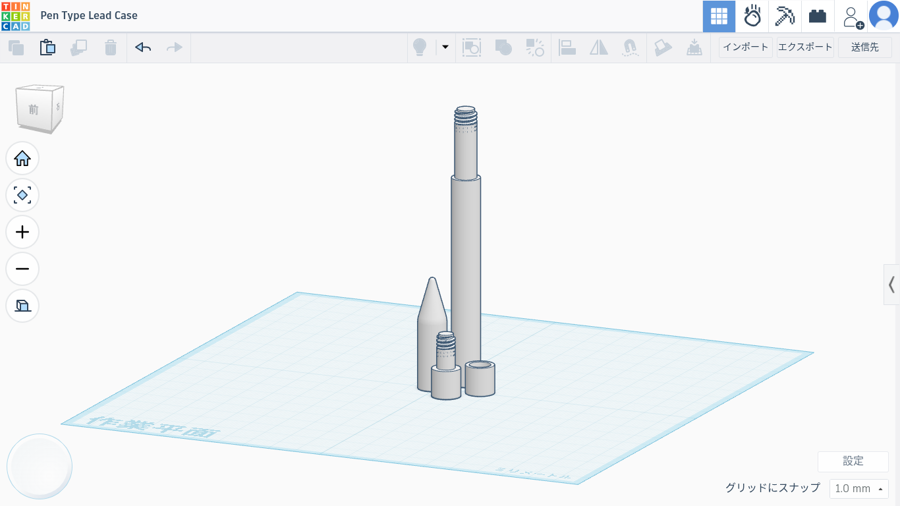

文房具の常識を、変える。
オフィスの概要
OY Officeは、「こんな文房具があったらいいな」というアイデアを形にすることを目指し、革新的な文房具の企画・開発を行う組織です。
私たちは、日常の学習や仕事の中で感じる小さな不便や課題に注目し、これまでにない発想と3DCADなどの最新技術を活用して、新しい価値を持つ文房具を生み出しています。
「使いやすさ」「楽しさ」「独創性」を大切にし、誰もがワクワクするような製品づくりに挑戦し続けています。OY Officeでは、未来の文房具を創造し、人々の学びや創作活動をより豊かにすることを目指しています。
オフィス成立年：2026年
社員：2名
代表：大平寛
製作の過程について

OY Officeでは、アイデアの考案から設計、試作、改良までを一貫して行っています。また、商品の設計から生産、塗装や仕上げまでの過程を全て丁寧に一つ一つ手作業で行っています。
まず、「こんな文房具があったら便利なのに」という発想をもとに企画を立案し、製品の機能やデザインを検討します。その後、3DCADソフトウェアである「Tinkercad」を用いて製品の設計を行い、形状や機構を細かく調整します。 完成した3Dデータは3Dプリンターを活用して試作品を製作し、実際の使用感や耐久性を確認します。試作品の評価結果をもとに設計を改良し、より使いやすく魅力的な製品へと仕上げていきます。 このようにOY Officeでは、アイデアを形にするために、デジタル設計と試作を繰り返しながら革新的な文房具の開発に取り組んでいます。